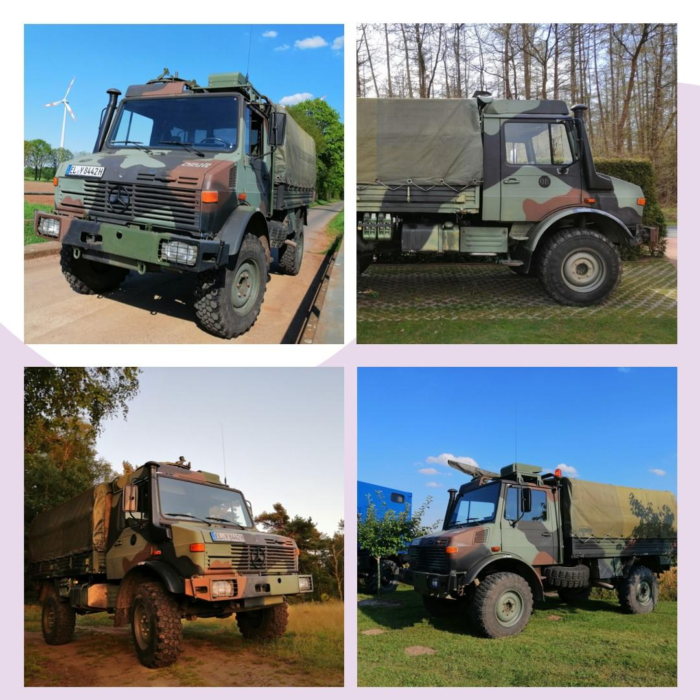

8‑Personen‑Sitzbank, Drehring‑Lafette, MSA‑Klimaanlage, Rundumleuchten, Flaggenhalter, Vorbaukonsole, Bergeösen, Schutzgitter, originale Beladung, CB‑Funkgerät.
Geplant: Suchscheinwerfer, Tarnscheinwerfer, Rückfahrscheinwerfer, Nebelschlussleuchte, MLC‑Schild, SEM‑Antenne, Pritschenrufanlage, Tarnstangenhalter, weitere Beladung.